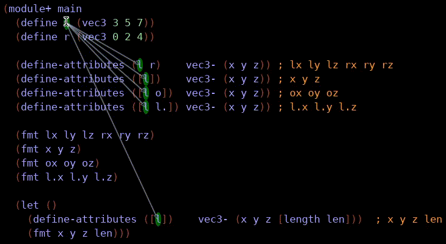
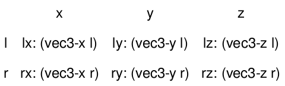

8.6
define-attributes
| (require define-attributes) | |
| package: define-attributes-lib | |
This macro makes certain repetitive access patterns easier to write. Its implementation was improved by feedback from the racket community.
This animated gif shows the binding arrows in DrRacket for some example uses of the macro.

syntax
(define-attributes (id ...) prefix (attribute ...))
id = input-id | [input-id] | [input-id renamed-id] attribute = attribute-id | [attribute-id renamed-id]
For every id the prefix is combined with the attribute and defined as a new binding.
The binding name is a combination of the id and the attribute, both can be renamed.
The id can be renamed to nothing in that case the binding name is only created with the attribute.
Another way to describe this is:
The different combinations of the ids with the attributes creates a resulting matrix of new bindings.
Lets say we have l and r defined as in the gif image above:
Then the corresponding matrix looks like this:

And writing the following:
(define-attributes (l r) vec3- (x y z))
is equivalent to writing this:
(define lx (vec3-x l)) (define ly (vec3-y l)) (define lz (vec3-z l)) (define rx (vec3-x r)) (define ry (vec3-y r)) (define rz (vec3-z r))
Here l is renamed to nothing so only the attribute names remain.
A few more examples:
(define-attributes ([l o]) vec3- (x y z)) ; ox oy oz (define-attributes ([l l.]) vec3- (x y z)) ; l.x l.y l.z (define (x² x) (* x x)) (define (vec3-length v) (define-attributes ([v]) vec3- (x y z)) (sqrt (+ (x² x) (x² y) (x² z)))) ; vec3-length accessed/computed as if it were an attribute (define-attributes ([l]) vec3- (x y z [length len])) ; x y z len